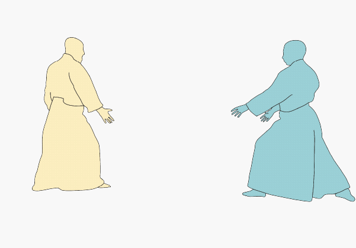

1. Ambas personas comienzan de frente y llevan sus manos derechas a unirse formando una x a la altura de sus cabezas.
En este breve análisis podremos observar como se lleva a cabo el movimiento shomen uchi - kote gaeshi en una serie de imágenes animadas.
1. Ambas personas comienzan de frente y llevan sus manos derechas a unirse formando una x a la altura de sus cabezas.
2. La persona en amarillo toma la muñeca derecha de la persona en celeste y la lleva hacia su costado.
3. Rotando a la persona en celeste desde la muñeca, la persona en amarillo utiliza esto para llevar el brazo hacia atrás, forzando el codo y hombro a que sigan el movimiento.
4. Ocupando este movimiento la persona en amarillo puede llevar a la persona en celeste hacia el suelo.
5. La persona en celeste cae en su espalda, y rápidamente rueda a su costado.
6. Una vez se tiene a la persona en celeste en el piso, se ocupa el brazo para rodarlo boca abajo, así logrando neutralizarlo.